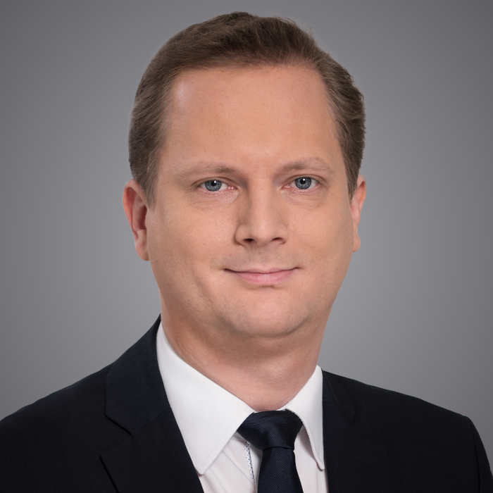

dr Paweł Kaźmierczyk
Legal & Legislative Affairs Expert
Członek Rady Fundacji
Radca prawny, senior associate w departamencie korporacyjnym kancelarii Rymarz Zdort Maruta i członek praktyki Life Sciences. Specjalizuje się w prawie medycznym, w szczególności w regulacjach działalności leczniczej, prawach pacjenta, badaniach klinicznych oraz prawnych aspektach telemedycyny, e-zdrowia, sztucznej inteligencji i innowacji w ochronie zdrowia. Doradza placówkom medycznym, firmom farmaceutycznym, dostawcom IT, startupom oraz instytucjom publicznym. Współpracuje m.in. z Telemedyczną Grupą Roboczą, Koalicją AI w zdrowiu i siecią NIL IN; koordynował prace nad zatwierdzonym przez PUODO kodeksem postępowania dla sektora ochrony zdrowia. Jest członkiem Komisji Ekspertów ds. Zdrowia przy Rzeczniku Praw Obywatelskich, wykładowcą i współautorem komentarzy z zakresu prawa medycznego. Laureat Rising Stars 2023 i key lawyer rankingu Legal 500 EMEA 2023.